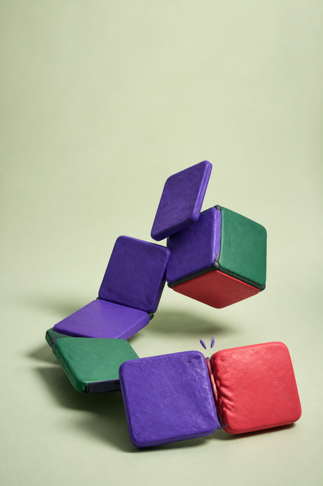
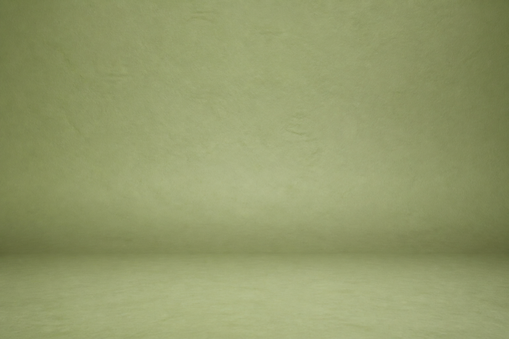

🔊

상
자
렁
이
여섯 칸이면 접어!
5학년 2학기 · 최고 배송
0
상자
공방 가동!
어떻게 놀아요? 〉

배송 점수
0
주문
1
/12
남은 시간
3:00
접었을 때 겹치지 않도록 두 면을 더 자라게 해 보세요.
모든 점토 면은 같은 크기예요.
↶
Z
테이프
▰▰▰
연속 배송
0
남은 움직임
20
완성 상자
0
↑
←
→
↓
1 / 3
손가락으로 빚어요
작업대를 상하좌우로 스와이프하면 머리가 한 칸 움직이고 빈칸에 새 면이 자라요.
다음
공방 기록 확정
0
0상자 배송 · 최고 연속 0
다시 빚기!